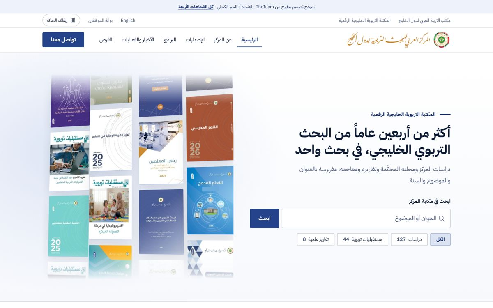
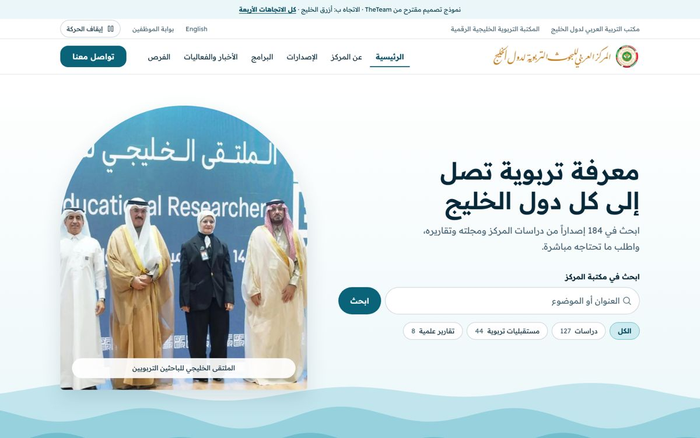
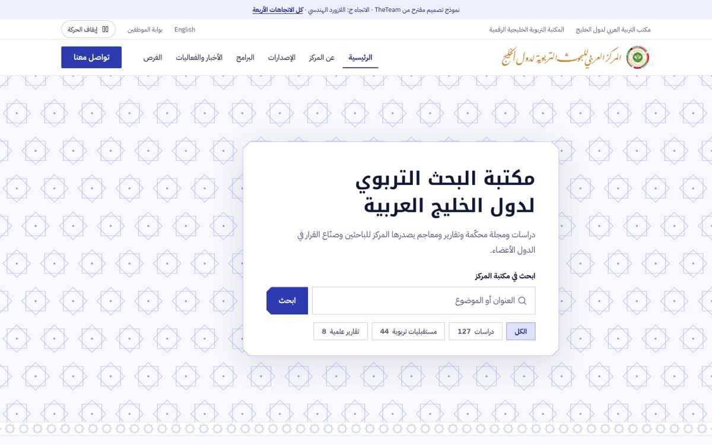
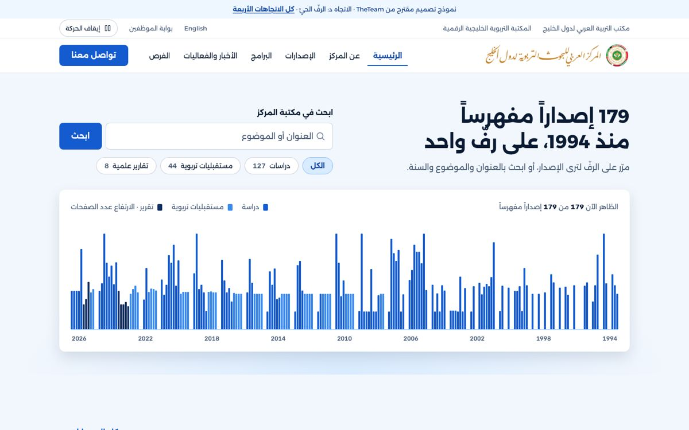

أالحبر الكحلي
رسمي · كثيف · واثقجدار أغلفة يتجاوب مع البحث: تكتب فتتقدّم الأغلفة المطابقة وتتراجع البقية.
الاتجاه المختار: المكتبة الرسمية
نفس الهيكل ونفس المحتوى الحقيقي، وكل اقتراح بدرجة أزرق وخطّ وحركة مختلفة. افتحوا أي اتجاه وجرّبوا البحث فيه.

أجدار أغلفة يتجاوب مع البحث: تكتب فتتقدّم الأغلفة المطابقة وتتراجع البقية.

بموجات تتنفّس تحت البحث وترتفع حيث المؤشر، ورفّ إصدارات يُسحب أفقياً.

جحقل من النجوم الثمانية يدور ويتلوّن قرب المؤشر، وينفتح حول البحث.

د179 كعب كتاب بسنواتها الحقيقية؛ الفلتر يعيد تلوينها والبحث يضيء المطابق.
?state=empty أو ?state=loading أو ?state=error. صفحة الدراسة: ?access=downloadable أو print_only أو on_request أو restricted.